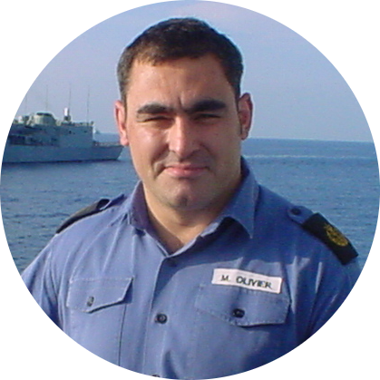

|  |
Mark OlivierExperienced Cyber Security Advisor Security Delivery Lead at DXC Technology | Cyber Security Specialist | Transformation Leader | Cyber Strategist |
An experienced, passionate cyber security and people leader with over 12 years industry experience plus 22-year military background, currently seeking exiting new opportunities to help clients recognise business opportunities whilst keeping their data secure. Extensive experience working with clients in the public sector, defence manufacturing and aerospace industries across multiple domains including strategic planning, program delivery, operational security management, governance risk and compliance encompassing frameworks such as Cyber Essentials, ISO 27001, NIST and others. Career highlights include leading technical assurance and risk management components delivering a new global IT platform to a public sector client and significantly reducing the number of technical vulnerabilities within a global defence manufacturing client by over 50% whilst enhancing their threat vulnerability capabilities and reducing strain on IT departments by prioritising patching of critical vulnerabilities.
An adaptable and agile professional, approaching business challenges with an analytical and methodical approach, facilitating collaboration from senior stake holders and individual contributors to achieve positive outcomes
| Dates | Role | Achievments |
|---|---|---|
| May 2019 - Present | Senior Security Delivery Leader |
|
| September 2017 - May 2019 | Head of Cyber Security Assurance Services, DXC Technology |
|
| January 2014 - September 2017 | Chief Information Security Officer - HP Enterprise Services |
|
| October 2010 - September 2014 | Various Cyber Security Roles, HP Enterprise Services |
|
| July 1988 - December 2010 | Royal Navy |